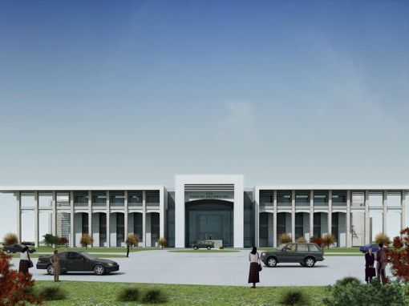
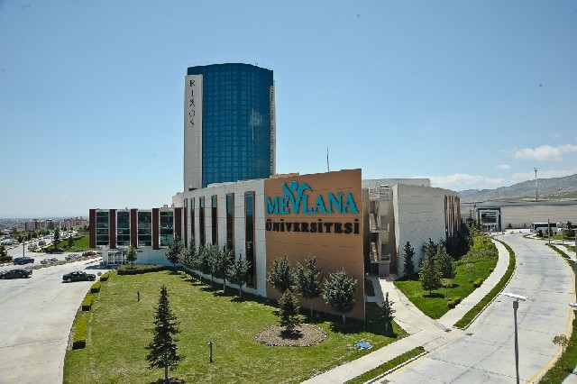
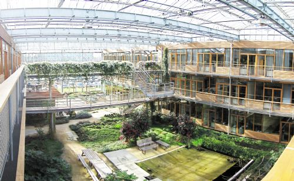
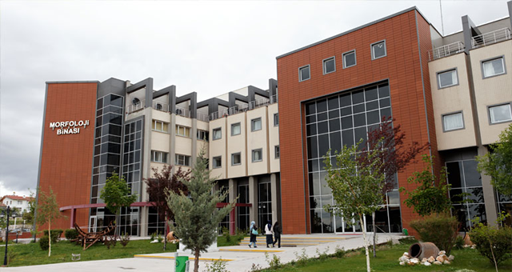

Konya; Ankara, İstanbul, İzmir, Eskişehir ve Mersin gibi birden fazla üniversiteye sahip olan illerdendir. Konya'da 2 adet devlet üniversitesi ve 3 adet vakıf üniversitesi bulunur.
Vakıf Üniversiteleri

Karatay Üniversitesi
KTO Karatay Üniversitesi, Konya ilinin Karatay ilçesinde kurulan bir vakıf üniversitesidir. Açıldığında Konya'nın ikinci üniversitesi olmuştur. Ayrıca üniversite Karatay Medresesi'nin devamı niteliğindedir. Konya Ticaret Odası Eğitim ve Sağlık Vakfı tarafından yapılan Karatay Üniversitesi için temel atma töreni 12 Kasım 2008 tarihinde yapılmıştır.[2] TBMM'ye sunulan yasaya göre KTO-Karatay Üniversitesi bünyesinde 5 fakültenin, 1 yüksekokulun ve 2 enstitünün açılması planlanmıştır.

Mevlana Üniversitesi
Mevlana Üniversitesi Gevher Sultan Eğitim Araştırma, Kültür ve Sağlık Vakfı tarafından kuruluş işlemleri yürütülmüş ve 07.07.2009 tarihli resmi gazetede yayımlanan 5913 nolu kanunun ek 114. Maddesi ile Konya ilinde kurulan vakıf üniversitesidir. 2010-2011 eğitim-öğretim döneminde eğitim öğretime başlamıştır.

Konya Gıda ve Tarım Üniversitesi
Konya Gıda ve Tarım Üniversitesi, Bilimsel Araştırma Teknoloji Eğitim ve Kültür Vakfı tarafından 2013 yılında Konya'da kurulmuş bir vakıf üniversitesidir. Üniversitenin kurulmasına ilişkin karar 18 Haziran 2013 tarihli ve 28681 sayılı resmî gazetede yayınlanmıştır.
Devlet Üniversiteleri
Selçuk Üniversitesi
Selçuk Üniversitesi, 1975 yılında Konya'da kurulmuş olan bir devlet üniversitesidir. Konya'da üniversite açılması konusunun gündeme geldiği tarih 1955 yılıdır. Bu tarihte Konya'da üniversitenin kurulması için TBMM'de bir kanun tasarısı hazırlandı. Tasarı, Milletvekillerinin yarısından fazlası tarafından da imzalandı. Ancak tasarı talihsiz bir şekilde Milli Eğitim Komisyonu'ndan geçemedi.

Necmettin Erbakan Üniversitesi
Necmettin Erbakan Üniversitesi, 2010 yılında Konya'da bir devlet üniversitesi olarak 14.7.2010 tarih ve 6005 sayılı kanun ile kurulmuş ve kuruluşu 21.7.2010 tarih ve 27648 sayılı Resmi Gazete’de yayınlanmıştır.
Konya Üniversitesi Rektörlüğüne, Cumhurbaşkanlığınca Anayasa'nın 130'uncu ve 2547 sayılı Yükseköğretim Kanunu'nun 13'üncü maddeleri uyarınca 10.12.2010 tarihinde Prof. Dr. Muzaffer Şeker atanmıştır. Üniversite; Sosyal ve Beşeri Bilimler, Mühendislik ve Mimarlık, Fen, Turizm, Eğitim Bilimleri, Havacılık ve Uzay Bilimleri, Meram Tıp, Ahmet Keleşoğlu Eğitim, Güzel Sanatlar ve İlahiyat Fakülteleri ile Devlet Konervatuarı, Yabancı Diller Yüksekokulu ve Sosyal Bilimler, Fen Bilimleri, Eğitim Bilimleri Enstitüleri olmak üzere dokuz Fakülte, bir Konservatuar, üç Enstitü ve bir Yüksekokul’dan oluşmaktadır.